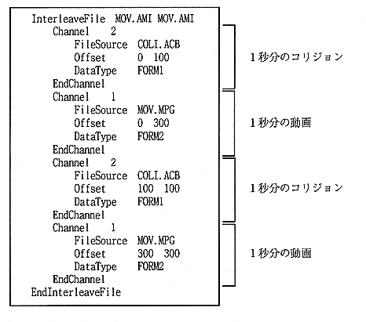

Return to previous page ｜ Return to menu ｜ Go to next page
The following shows an output example of the -
interleave definition file.
・ MPEG video data rate is 150KB / S and video file playback time is 2 seconds.
・ MPEG video is MOV.MPG, collision file is COLI.ACB, and interleave file is MOV.AMI.
・ Video and collision are interleaved every second.

Return to previous page ｜ Return to menu ｜ Go to next page